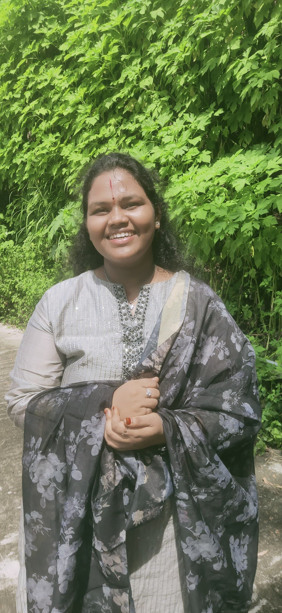

Hi, I’m Harini Choppalli 👋
Computer Science Student | Artificial Intelligence | Full-Stack Developer
Career Objective
Seeking a challenging position in an organization where I can enhance my
skills and contribute to the growth of the organization and myself.
Academic Profile
-
B.Sc (Artificial Intelligence & Robotics) – Aditya Degree College , AU – 82% – 2022-2025
-
Intermediate (MPC) – Sri Chaitanya Junior College – 91%
– 2020-2022
- SSC – Polloks High School – 99% – 2020
Technical Skills
- Programming Languages: Python, Java, R, Data Analysis
- Web Technologies: HTML, CSS, JavaScript, React
- Database: MySQL
- Cloud: AWS (IAM, EC2, S3)
- Tools: Git, Swagger UI, SQLyog, Excel, Pandas, Numpy, Scikit-Learn
Academic Projects
Project 1 ~ Cloud Computing
-
Major Project: Hosting a dynamic website using EC2
instance (AWS)
-
Mini Project 1: IAM user creation and permission
setup
-
Mini Project 2: File upload and asset access using S3
Project 2 ~ Exploratory Data Analysis & ML
-
Data Analysis: Analyzed a dataset using Pandas and Numpy to extract insights and trends. Applied data visualization techniques to present findings effectively.
Certifications
- Applying Artificial Intelligence by Delftx - EDX
- Artificial Intelligence Using Python – Infosys Spring Board
- World's First Global English Standard - Mepro
Internship
Full Stack Web Development Intern
Schemax Company : Developed a web application using HTML, CSS, JavaScript, and React. Collaborated with the team to implement features and improve user experience.
AI / ML Intern
ULearn Edu Tech:
Created the Food Guard project using image recognition and TensorFlow in Python. Learned various AI tools and gained knowledge about ML algorithms.
Strengths
- Hardworking
- Self-Motivated
- Time Management
- Good communication skills
Personal Details
- Name: Choppalli Harini
- Date of Birth: 07-07-2005
- Languages Known: English, Telugu , Hindi
-
Hobbies: Dancing , Listening to music, Reading Books